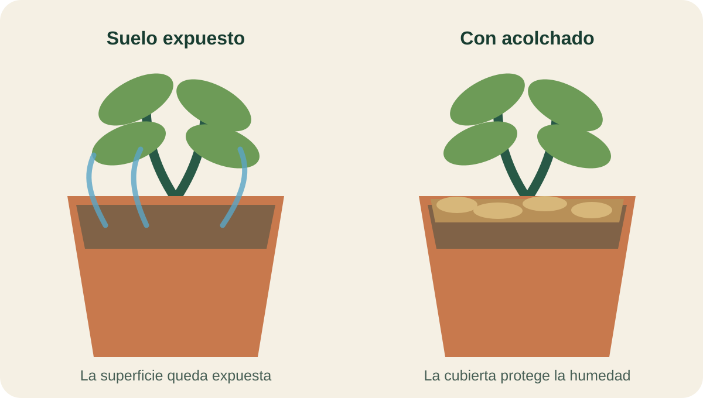

Módulo 09 · 25 minutos
Suelo, agua y abono: cultivar sin diluir el aroma
Al terminar, vas a poder decidir una pauta inicial de riego, abonado y mantenimiento del suelo según la especie y su forma de cultivo.
La paradoja de la parcela generosa
Un cultivo recibe agua abundante y un suelo muy rico. Crece rápido, verde y voluminoso. Parece el resultado perfecto, hasta que llega el momento de buscar su aroma.
Las plantas aromáticas introducen una regla contraintuitiva: no siempre conviene ofrecer más. Muchas prefieren poca agua y un suelo normal en nutrientes; se abonan poco precisamente para que no pierdan sabor y aroma. Cultivar bien empieza por abandonar una receta única.
Dos grupos, dos necesidades
En general, las hierbas aromáticas, comestibles y medicinales son fáciles de cultivar y resultan apropiadas para quien recién comienza. Pero esa facilidad no significa que todas respondan del mismo modo al agua.
Muchas especies de origen mediterráneo —hisopo, lavanda, melisa, orégano, salvia, santolina y tomillo— necesitan poca agua para vivir. Otras requieren más humedad, como la menta, el perejil y la hierbabuena.
Esta primera división sirve como punto de partida, no como calendario automático. La cantidad de riego también cambia con el clima, la exposición al sol, el viento, el tipo de suelo y la estación. Un suelo arenoso y uno arcilloso no retienen el agua de la misma manera; una planta expuesta al viento no atraviesa el verano igual que otra protegida.
La maceta cambia la regla
Las aromáticas pueden crecer bien en jardineras, aunque allí necesitan más agua y nutrientes que en tierra. Durante el verano, las macetas requieren riegos más frecuentes. El volumen limitado de sustrato vuelve más rápido cualquier cambio de humedad.
El evita que el agua quede acumulada. Para favorecerlo se colocan trozos de cerámica en el fondo del recipiente. El debe mantenerse suelto: en macetas puede pincharse o removerse suavemente para airearlo.
El momento también importa. Se riega a primeras horas de la mañana o al atardecer, y no durante las horas de mayor sol.

Dos superficies bajo el mismo sol
Compará las macetas. En una, la tierra queda expuesta; en la otra, una capa cubre la superficie. Seguí el recorrido imaginario del agua después del riego: ¿en cuál quedaría protegida por más tiempo? ¿En cuál esperarías encontrar más hierbas espontáneas?
Abonar poco para conservar el carácter
Las aromáticas prefieren, en líneas generales, un suelo normal en nutrientes minerales antes que uno demasiado rico. En tierra basta un aporte anual. Si se utiliza abono orgánico —estiércol, mantillo o turba— se aplica en invierno, a razón de un kilogramo por metro cuadrado. El abono mineral se aporta en primavera y otoño.
En maceta, durante el desarrollo, puede añadirse abono líquido disuelto en el agua de riego una vez al mes. Otra posibilidad es reemplazar los tres o cuatro centímetros superiores del sustrato por tierra nueva.
El también puede llegar lentamente desde un acolchado orgánico que se descompone.
Airear sin herir
Varias veces al año se realizan cavas para romper la costra superficial, airear y mullir el terreno, y retirar malas hierbas. El mínimo indicado es dos veces al año y el máximo cinco o seis.
La profundidad es decisiva: el trabajo debe ser muy superficial para no romper raíces. La herramienta no tiene que conquistar el suelo; solo abrir su superficie.
La menta y el estragón presentan otro desafío. Sus tallos subterráneos se extienden con rapidez y pueden invadir el espacio de otras plantas. Un cubo enterrado limita la expansión lateral; también pueden recortarse con frecuencia.
El acolchado: una capa con cuatro funciones
El , también llamado mulching, puede agregarse al plantar o en cualquier otro momento. Cumple cuatro funciones:
- conserva la humedad y reduce la necesidad de riego;
- dificulta la aparición de malas hierbas;
- si es orgánico, se descompone y aporta humus;
- puede mejorar la presentación visual del cultivo.
Actividad · Diseñar dos zonas de riego
Distribuí estas especies en dos sectores: hisopo, lavanda, melisa, orégano, salvia, santolina, tomillo, menta, perejil y hierbabuena.
Para cada sector anotá:
- necesidad general de agua;
- horario de riego;
- qué revisarías antes de volver a regar;
- si usarías acolchado y por qué.
Después elegí una especie para maceta y explicá qué cambiaría respecto del cultivo en tierra.
La planta responde
El suelo está aireado, el agua llega en la medida necesaria y el abonado no borra el aroma. La planta empieza a crecer. Ahora cada corte decidirá si se ramifica, florece o queda expuesta a una herida innecesaria.
Guardá esta estación
Cuando puedas explicar la idea central con tus propias palabras, marcá el módulo como completado.